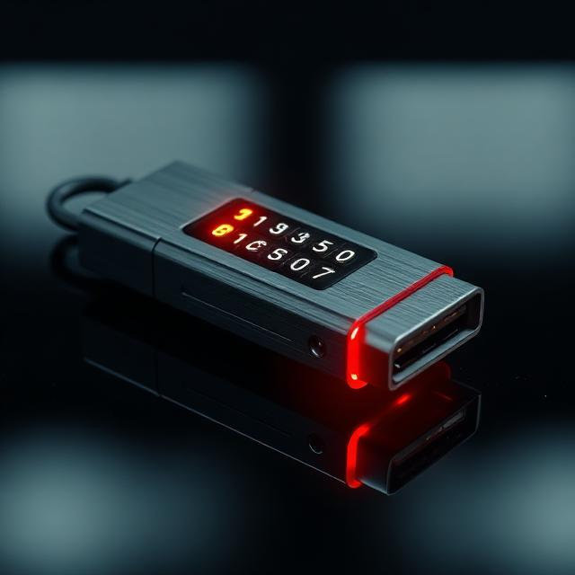

Seuraavan sukupolven tietoturvaa
VaultKey Ultra on suunniteltu vastaamaan nykyajan kyberuhkiin. Se tarjoaa fyysisen esteen luvattomalle pääsylle ja varmistaa, että arkaluontoiset tiedostosi pysyvät vain sinun saatavillasi. Laitteen sotilastason rakenne ja älykäs suojamekanismi tekevät siitä markkinoiden turvallisimman tallennusratkaisun.

Kestävä alumiinikuori ja integroitu näppäimistö takaavat, että tiedot on suojattu ennen kuin laite edes kytketään tietokoneeseen. Tämä estää tehokkaasti keylogger-ohjelmistojen ja muiden haittaohjelmien yritykset kaapata pääsykoodisi.
Tuotteen ominaisuudet
Sotilastason salaus
AES-256 bittinen laitteistosalaus suojaa kaiken datan reaaliajassa.
Salasanasuojaus
Monitasoinen suojaus estää luvattoman käytön kaikissa tilanteissa.
Fyysinen PIN-koodi
Sisäänrakennettu näppäimistö takaa turvallisen avauksen ilman väliohjelmistoja.
Automaattinen lukitus
Laite lukittuu välittömästi, kun se irrotetaan USB-portista tai yhteys katkeaa.
Yhteensopivuus
Toimii suoraan Windows, macOS, Linux ja Android -käyttöjärjestelmissä.
Itsetuhojärjestelmä
10 virheellisen koodin jälkeen laite pyyhkii kaiken datan pysyvästi.
Yhteystiedot
Sähköposti: support@vaultkey.tech
Puhelin: +358 40 123 4567